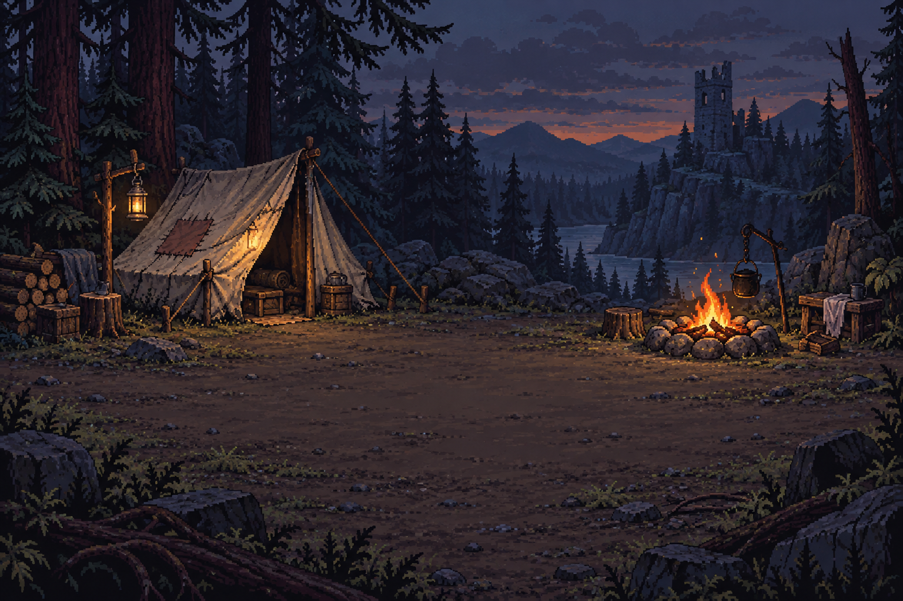
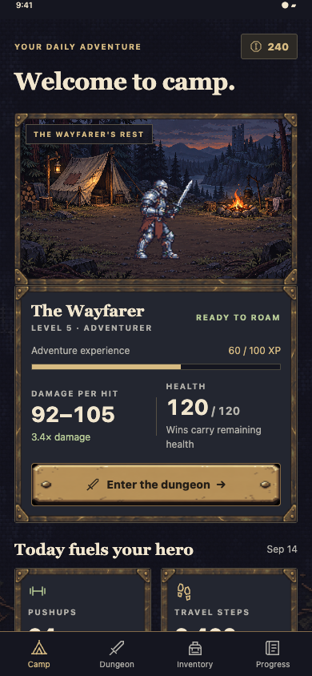
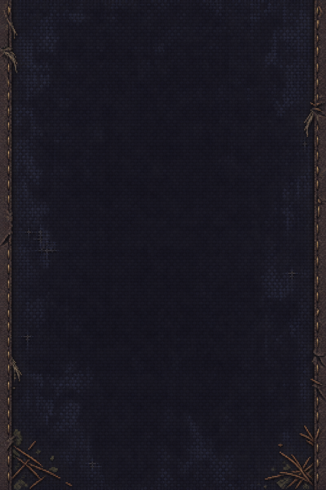
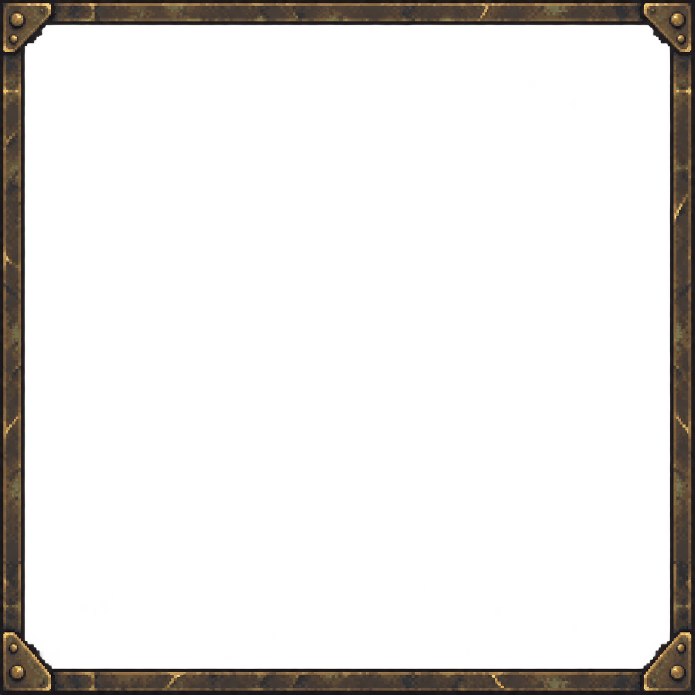
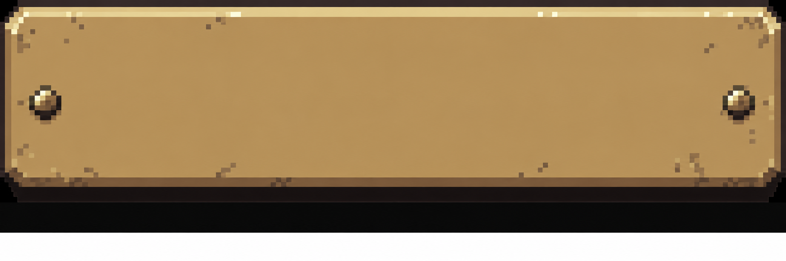
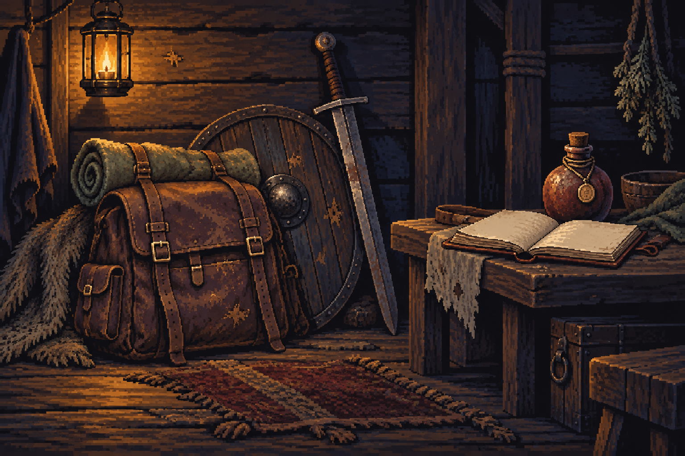

Camp at dusk
Empty foreground for the live equipped player sprite.
camp-v1.pngA woodland camp, worn brass frames and a traveling kit. Five generated assets now support the camp, dungeon, inventory and progress menus.


Empty foreground for the live equipped player sprite.
camp-v1.png
A quiet backdrop shared across menus and navigation.
background-v1.png
Eight slices preserve the small corner plates.
frame-v1.png
Refined opaque label area. The renderer clips the lower source margin.
button-v1.png
A lantern-lit inventory cover.
inventory-v1.png